Dan's Garden
Landscape Art, 2024-ongoing
Dan's Garden began in late August 2024. I received a packet of marigold seeds from One Love Community Fridge's farm share. I decided, ignorant to the lateness of the growing season, planted them in the back window of my Clinton Hill apartment. To my surprise they grew to maturity by the end of September and briefly bloomed.
The experience made me begin to think about urban and guerilla gardening - creating beauty and ecosystems in spaces where they are not intentionally designed (or allowed). I also connected it to art-making practice - creating beauty that lives outside of systems of commodity and commerce.
In 2025, I moved to an apartment with brilliant southern light facing a fire esacape. This is the site where the first iteration of Dan's Garden was initiated. (eskewing building codes). The seeds were sown in March 2025 and began blooming in the early summer months. In addition to the fire escape, smaller plots were squeezed into available space along window sills. In August the asters were the last to bloom, marking the end of the season.
The 2026 edition evolved to include two English rail baskets.
| Year(s) | Seeds Used | Source | Detail |
|---|---|---|---|
| 2024 | Marigolds | One Love Community Fridge | |
| 2024 | Purple Cone Flower | One Love Community Fridge | |
| 2024 | Assorted Herbs | One Love Community Fridge | Basil; Dill; Parsley; Thyme |
| 2025 | Blue Aster | Botanical Interests | |
| 2025; 2026 | Good Bug Blooms | Hudson Valley Seed Company | Indian Blanket; Dahlia Zinnia; Tall Blue Cornflower; Scarlet Flax; Sweet Alyssum; German Chamomile; Bright Lights Cosmos; Persian Carpet Zinnia |
| 2025; 2026 | Bee Nectar Mix | Hudson Valley Seed Company | Echinacea; Lance-leaved Coreopsis; Lacy Phacelia; Globe Gilia; Siberian Wallflower; China Aster; Sweet Alyssum; California Poppy; Plains Coreopsis; Bergamot; New England Aster; Purple Giant Hyssop; Chinese Forget-me-not; Smooth Penstemon; Fleabane Daisy; Corn Poppy |
| 2025; 2026 | Everlasting Flower Mix | Hudson Valley Seed Company | Strawflower; Winged Everlasting; Crested Mix Celosia; Love In A Mist; Love Lies Bleeding; Bupleurum; and Starflower |
| 2026 | Corn Poppies | Botanical Interests | |
| 2026 | Gift Zinneas | Hudson Valley Seed Company | |
| 2026 | Polar Bear Zinneas | Hudson Valley Seed Company | |
| 2026 | For the Birds Flower Mix | Hudson Valley Seed Company | Dwarf Sunflower; Partridge Pea; Phlox; Blue Flax; Gayfeather; Shasta Daisy; Prairie Coneflower; Black-Eyed Susan |
| 2026 | Tiger's Paw Aster | Hudson Valley Seed Company |

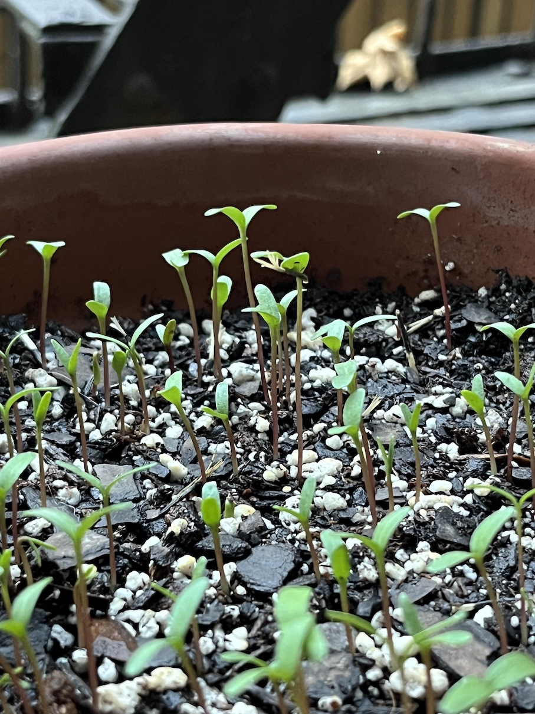
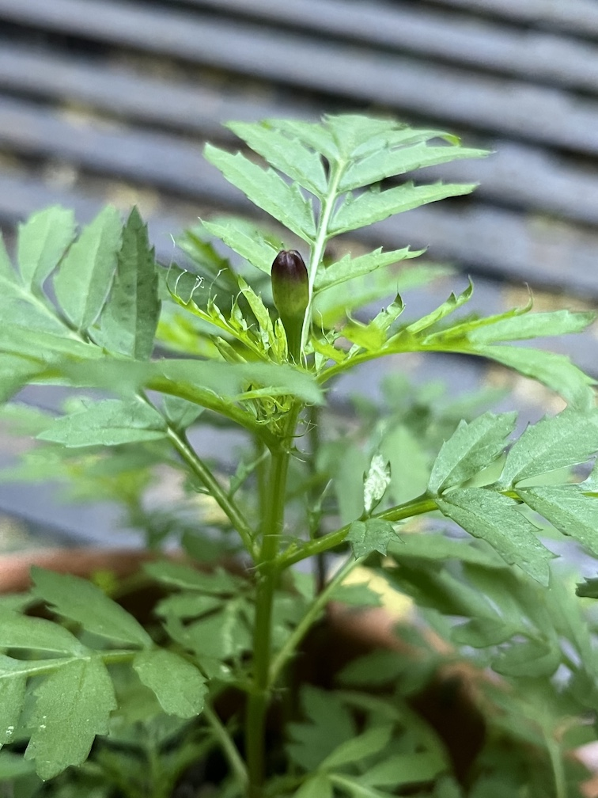
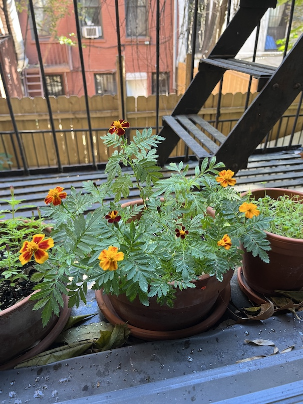
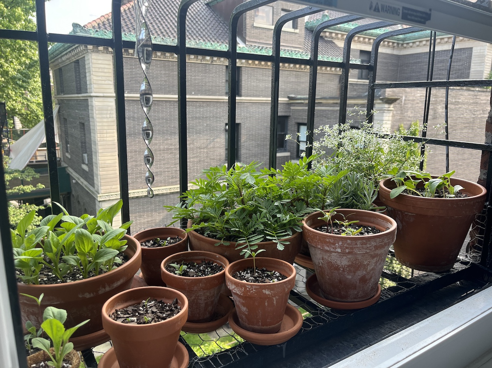
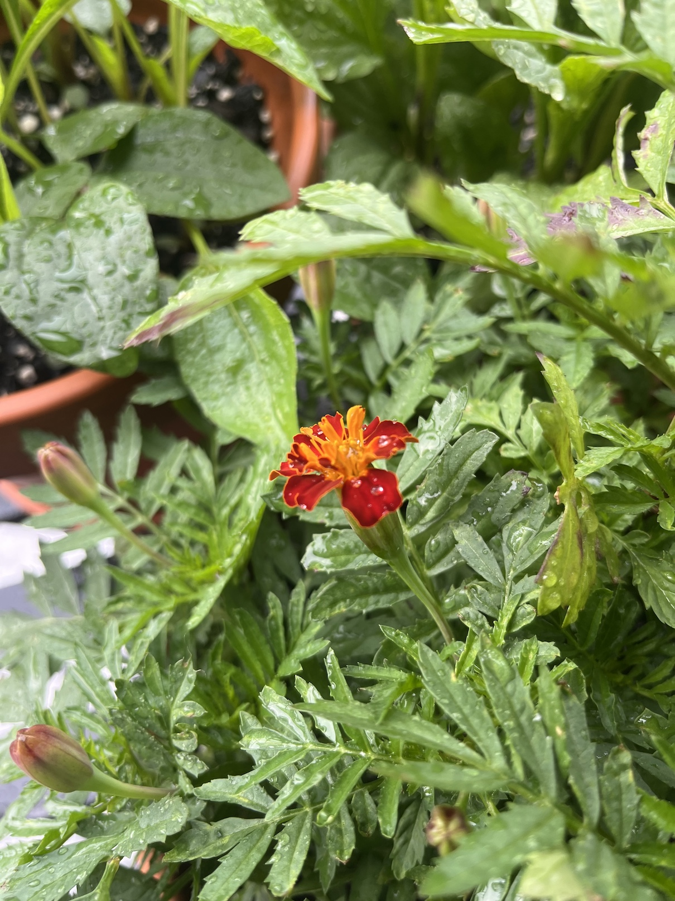
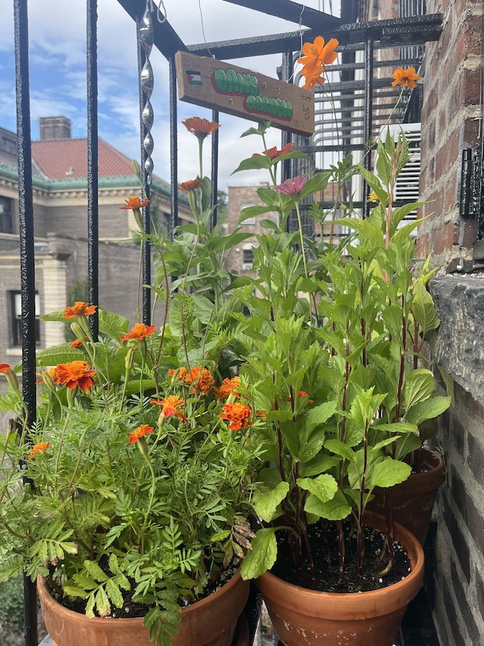
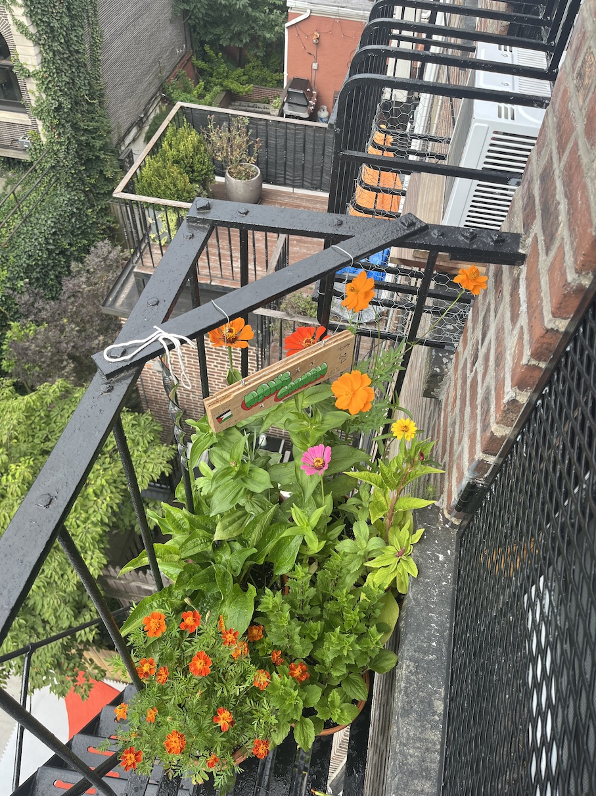
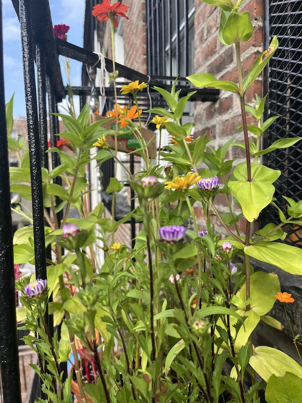
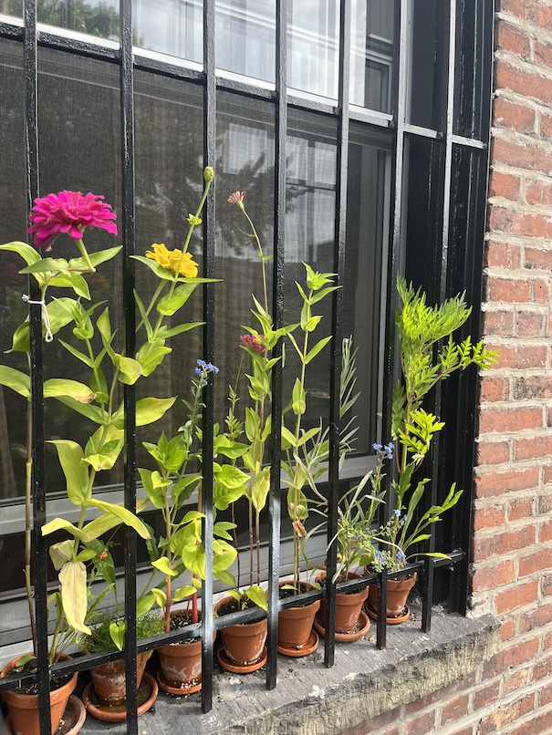
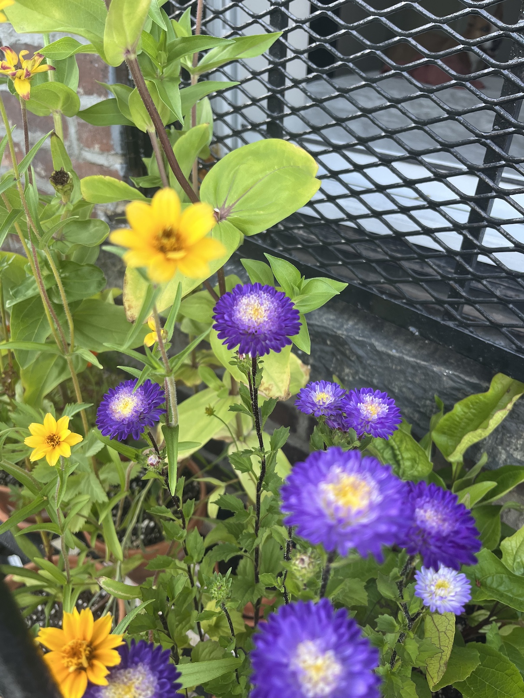
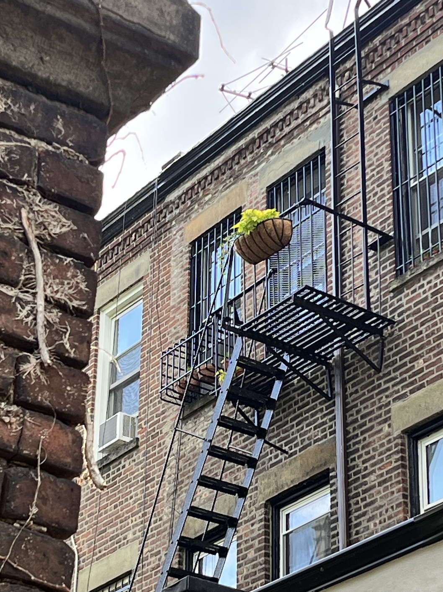
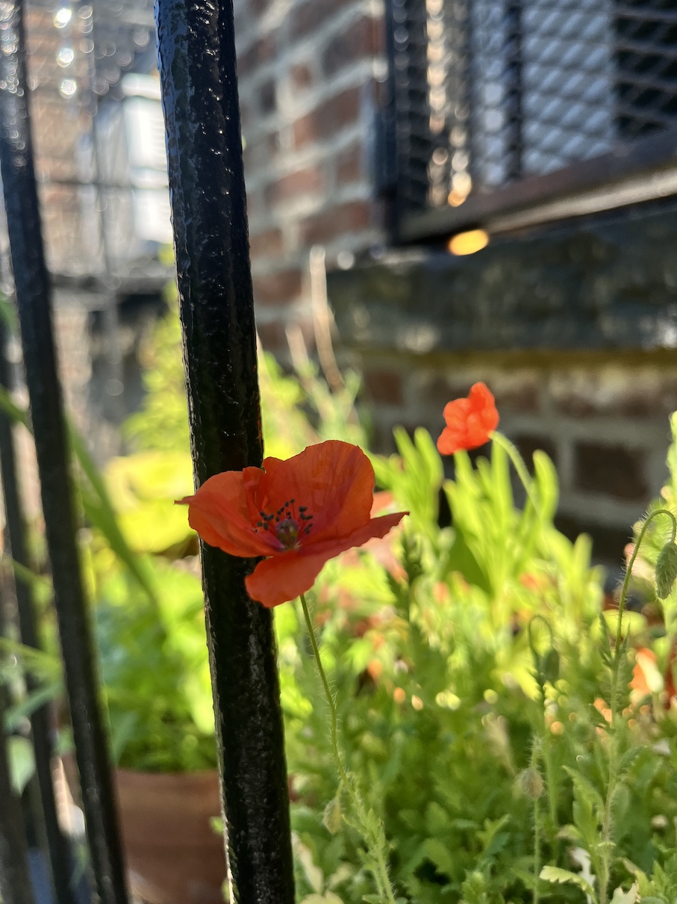
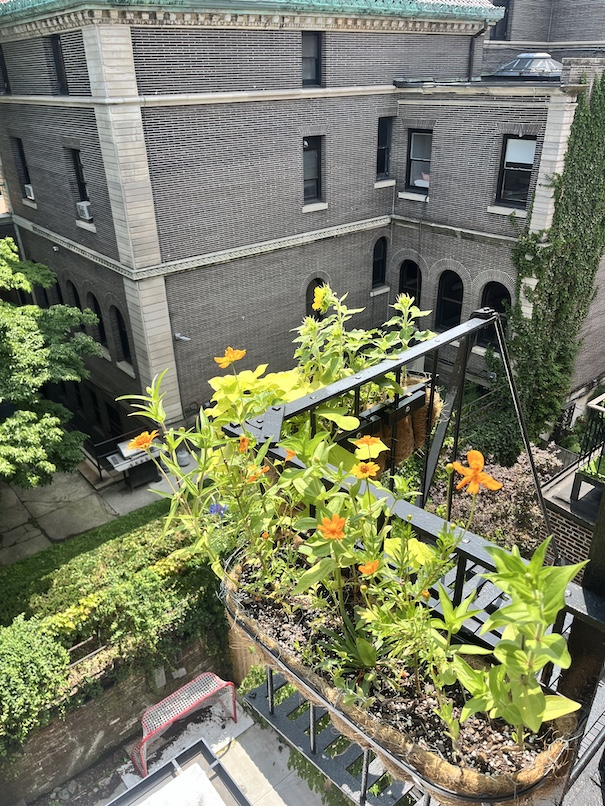
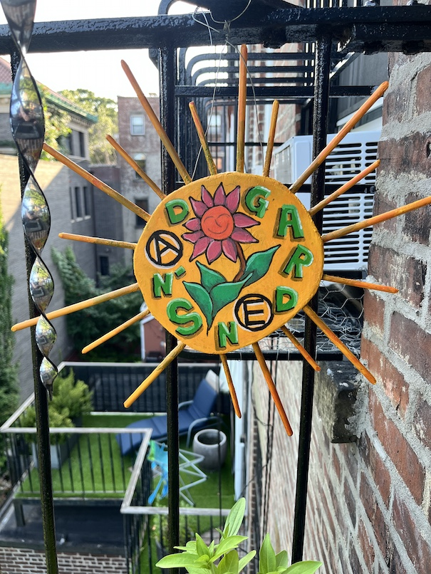
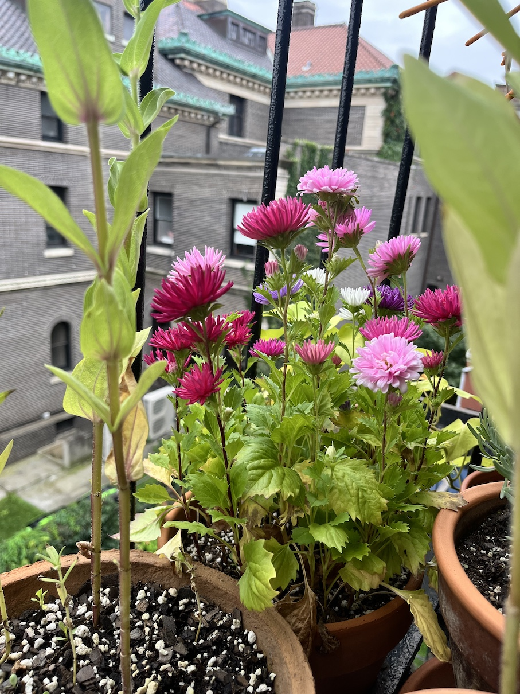